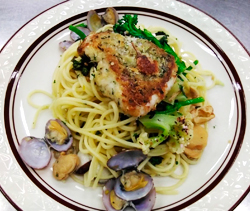

春パスタ真鯛グリルのせ
- 調理時間：30 分
- （一人当たり）
- カロリー：790kcal
- たんぱく質：33.6g
- 脂質：29.8g
- 炭水化物：83.0g
- 塩分：2.0g


＜2人分＞
- スパゲティ
- 200g
- アサリ
- 100g
- 料理酒
- 80ml
- 菜の花（3㎝長さに切る）
- 50g
- スティックブロッコリー
（3㎝長さに切る） - 50g
- カリフローレ
（小房に分けて一口大） - 40g
- バター
- 20g
- 塩、コショウ
- 少々
- ・マダイ
- 2切れ(140g)
- ・パン粉
- 大さじ２
- ・パセリ、ローズマリー
- 適量
- ・植物油
- 大さじ２
A


- <マダイの香草パン粉焼きをつくる>
パセリとローズマリーはみじん切りにしてパン粉と合わせる。 - 真鯛は塩、コショウ（分量外）して、②の香草パン粉を両面にまぶし、オリーブ油をしいたフライパンで両面、カリっと焼く。
- <パスタを準備する>
菜の花、スティックブロッコリー、カリフローレは食べやすい大きさにきり、アサリは殻をこすり合わせて洗っておく。 - 小鍋にアサリと料理酒をいれて火にかけ、酒蒸しにする。
- 大きめの鍋に湯を沸かし、湯に対して1%の塩を加えてパスタをゆでる。
- フライパンにバターをいれ火にかけ、菜の花、スティックブロッコリー、カリフローレを炒め、塩コショウをする。
- 茹で上がったパスタ、④のアサリと蒸し汁も加えて炒め合わせる。
- パスタを皿に盛り付け、マダイの香草パン粉焼きをのせて完成。
春パスタ真鯛グリルのせ
日本人の魚離れが急速に進んでいます。日本の年間一人当たり魚介類の消費量のピークは1989年で72kgでしたが、2021年には41kgになり、1989年と比較しても43%下落しました。
このことから、国や漁業者団体は様々な取組みを勧めており、その一つが「ファストフィッシュ」。これは、食材と調味料を組み合わせたミールキットや コンビニでの魚メニューの充実化、調理の簡単なレシピ開発などがあり、食品や加工業者が 提案し、これを水産庁が支援するシステムです。おいしく頂くことで漁業の発展を支え、魚食文化を繋いでいきたいと願います。